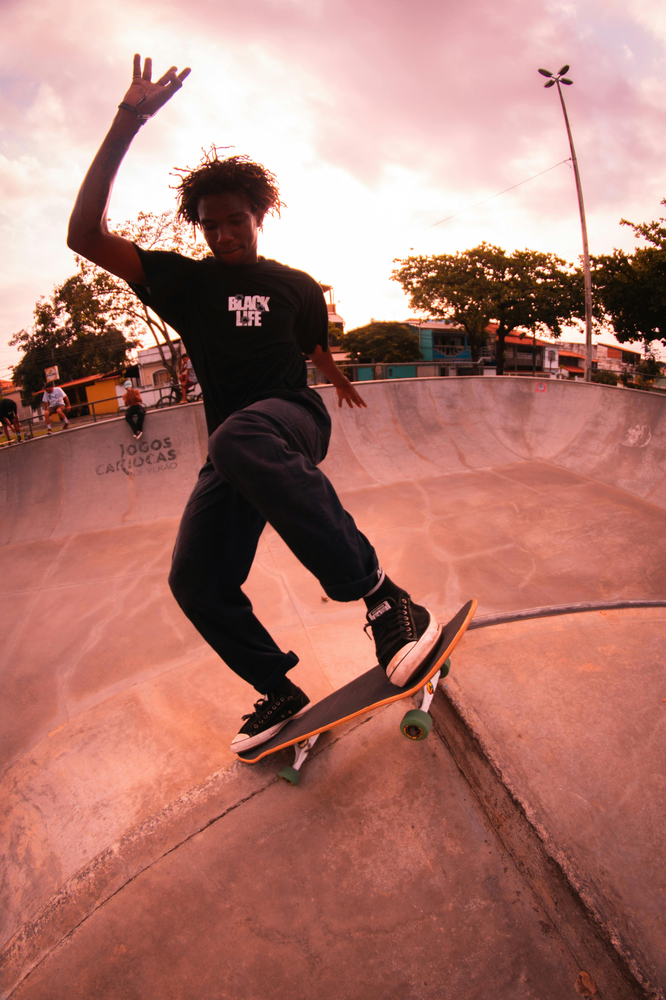
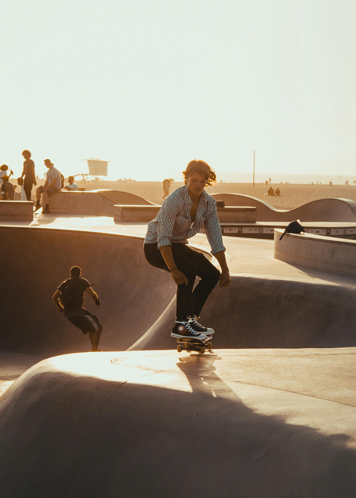

Mikzwek Mag
Here you will find pictures of underground artist from Barranquilla, we all collab to mantain this website, keeping the most updated pictures of the city and its people

Main artists
Cassio

Marru

Hugo
Sam
These artist are based in Barranquilla, all of them are well-known because of their talent and how they actually support and make grow the local scene in their city.
Support us sharing our proyect to your friend!
You can subscribe to our montlhy publications by clicking that button right over there!